SHEIN上市：从婚纱搜索生意到港交所
2026年9月1日，SHEIN在香港交易所挂牌，股票代码00625。
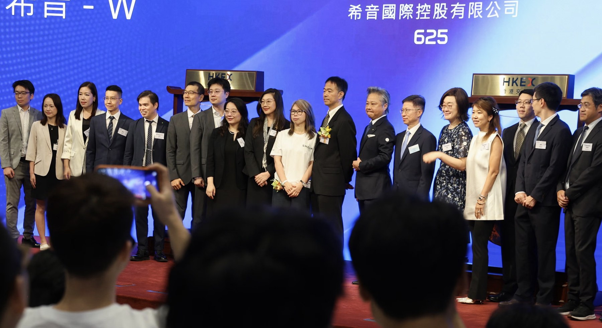
图 1 · SHEIN（股份代码：00625）于2026年9月1日在香港交易所挂牌 · 来源：作者资料库（原始出处未嵌入文档）
发行价为每股48.56港元，全球发售约2.80亿股，募资总额约135.96亿港元，扣除发行费用后的净额约132.14亿港元。首日盘中一度跌至43.80港元，收于48.50港元。这个接近发行价的收盘价需要结合稳定价格安排理解：配发公告显示，稳定价格期持续至9月26日，高盛（亚洲）担任稳定价格经办人，因此不能把首日表现直接等同于市场对发行估值的认可。
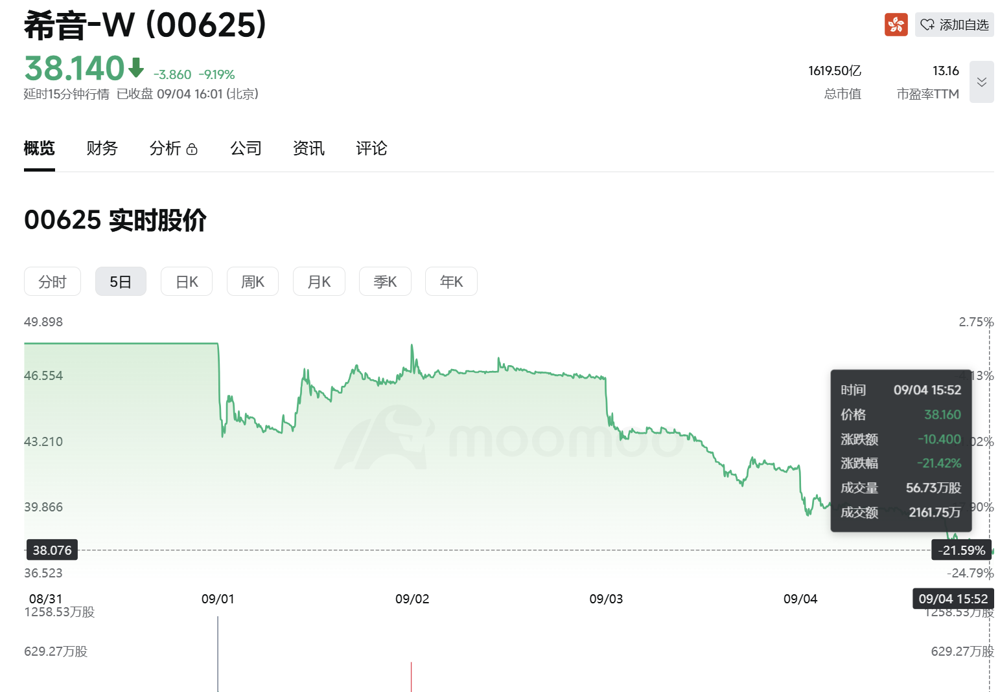
图 2 · SHEIN-W上市后五日股价走势（截至2026年9月4日收盘） · 来源：Moomoo；股价为动态数据
截至9月4日，SHEIN收于38.14港元，较发行价下跌约21.5%。以发行后约42.46亿股总股本粗略计算，公司市值约1,620亿港元，折合约207亿美元。2022年，SHEIN在私人融资中的估值曾达到982亿美元。
这两个数字之间的距离，是理解此次上市的起点。变化的不只是资本市场环境。SHEIN的收入增速、获客费用、跨境履约成本和外部监管条件都已不同于2022年。上市完成了融资和流动性安排，但没有结束市场对其商业模式的判断；相反，这些问题从此会被放进公开价格中持续检验。
01 两个起点，代表两种公司口径
关于SHEIN从何时开始，公开材料存在两种常见说法。
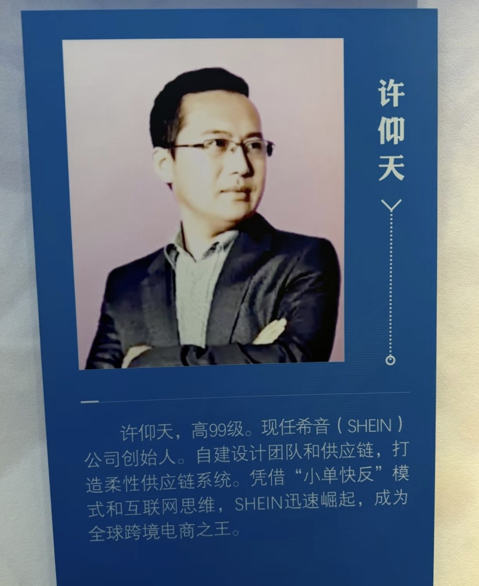
图 3 · 许仰天，SHEIN创始人 · 来源：作者资料库（原始出处未嵌入文档）
一种说法把起点追溯到2008年。媒体调查显示，许仰天当时已出现在南京一家跨境电商公司的工商记录中，其早期能力主要是搜索引擎优化：分析海外用户在Google上的搜索需求，再从中国供应端寻找适合出口的商品。后来出现的SheInside网站曾以婚纱为主要定位，同时销售女装。
港交所招股书采用的是另一套口径：四位创始人于2012年开展相关业务，2013年推出SHEIN品牌，2014年开始试验后来被称为LATR的测试返单模式，2015年上线移动应用。
两种说法未必互相排斥。2008年至2011年更接近SHEIN的业务前史，核心是搜索流量和跨境卖货；2012年以后，组织、品牌和供应链系统才逐渐形成。区分这两段历史很重要，因为SHEIN最早积累的能力并不是服装设计，而是识别线上需求，并以较低成本迅速组织供给。
这也决定了它后来与传统服装企业不同的发展路径：先观察需求，再组织商品；先建立线上反馈，再反向调整生产。
02 LATR：供应链效率的来源与边界
传统服装零售通常要在款式数量、上新速度和库存风险之间取舍。SHEIN采用的办法，是把一款商品的初始生产量压缩到约100至200件，投放市场后观察点击、加购和购买数据。表现较好的款式进入返单流程，最快约5天可以补货；表现不佳的款式则停止追加。
公司将这套机制称为LATR，即Large-scale Automated Test and Reorder，大规模自动化测试与返单。
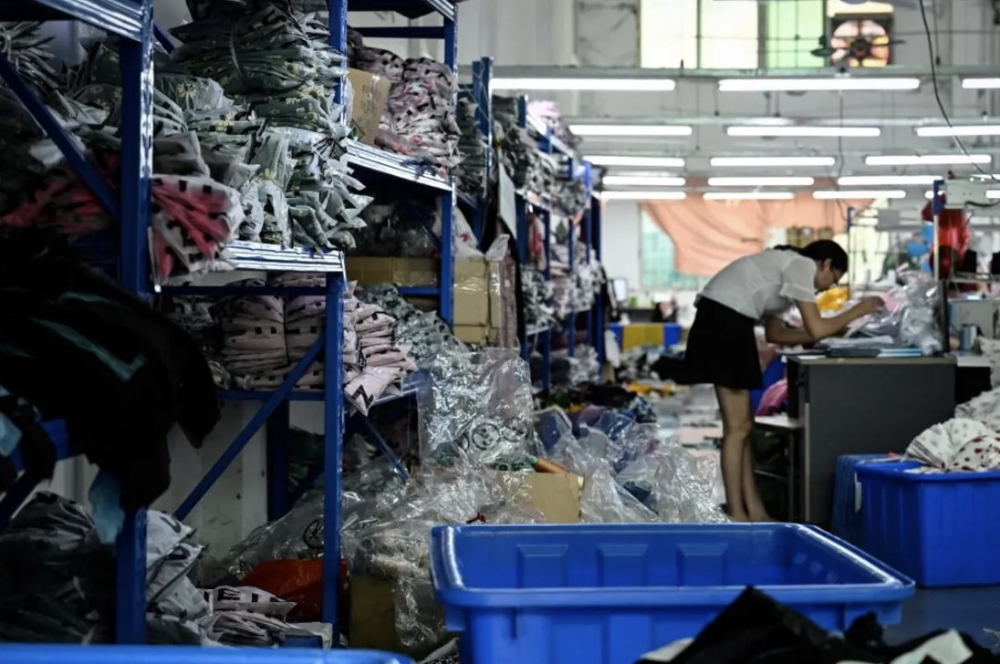
图 4 · SHEIN供应链合作工厂的分拣与包装作业场景 · 来源：作者资料库（原始出处未嵌入文档）
小单快反不是SHEIN独有的概念。SHEIN的特殊之处，在于把需求测试、设计、订单分配、工厂排产、质量控制、跨境履约和用户反馈连接成一套大规模运行的系统。截至2025年，公司合作的合同制造商超过7,500家；截至2026年3月底，在架服装款式超过200万个，第一方模式平均每天向消费者展示约4,700个新款。2025年存货周转天数为36天。
这些数字说明，SHEIN的供应链优势主要来自减少预测规模、加快反馈和延后大批量生产，而不是准确预测每一款商品。但这套模式也有边界：它可以降低库存风险，无法消除跨境运输、关税、退货和流量采购成本。后几项成本，正是SHEIN上市时估值承压的重要原因。
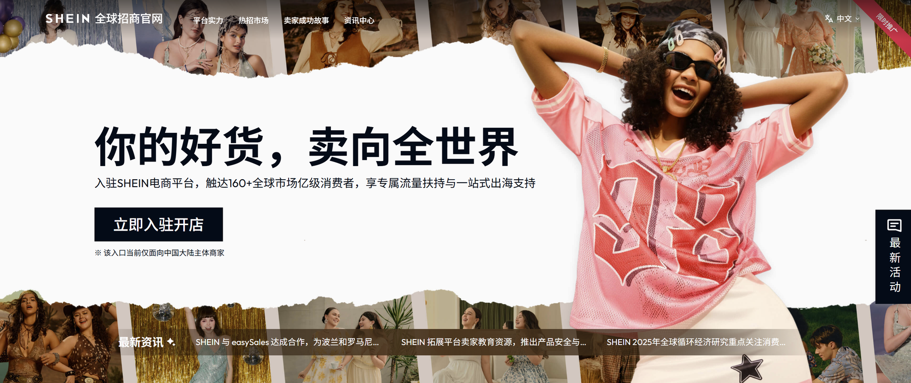
图 5 · SHEIN全球招商官网首页，展示其平台化与商家服务入口 · 来源：SHEIN全球招商官网截图
与此同时，SHEIN正在从第一方零售向平台和服务业务延伸。2023年至2025年，服务收入从8.68亿美元增至47.40亿美元，占净收入的比例由2.7%升至11.3%，2026年第一季度进一步升至14.3%。服务收入包括商城佣金、履约服务费和品牌合作服务费。
招股书称，品牌赋能业务的营业利润率约为集团整体的两倍。这为“供应链能力可以对外变现”的判断提供了依据，但公司没有披露该业务的绝对收入和利润规模。目前更稳妥的表述是：SHEIN已经开始把内部能力产品化，平台服务是否足以改变集团利润结构，还要等后续分部数据验证。
03 规模已经成立，估值信任尚未建立
招股书首次较完整地披露了SHEIN的经营规模。
2025年，公司实现净收入418.47亿美元，同比增长8%；净利润20.64亿美元，活跃顾客约2.73亿，全年订单10.78亿笔，业务覆盖约160个市场。按2025年服装及鞋履零售额计算，招股书援引行业顾问研究，将SHEIN列为全球最大的线上时尚目的地。
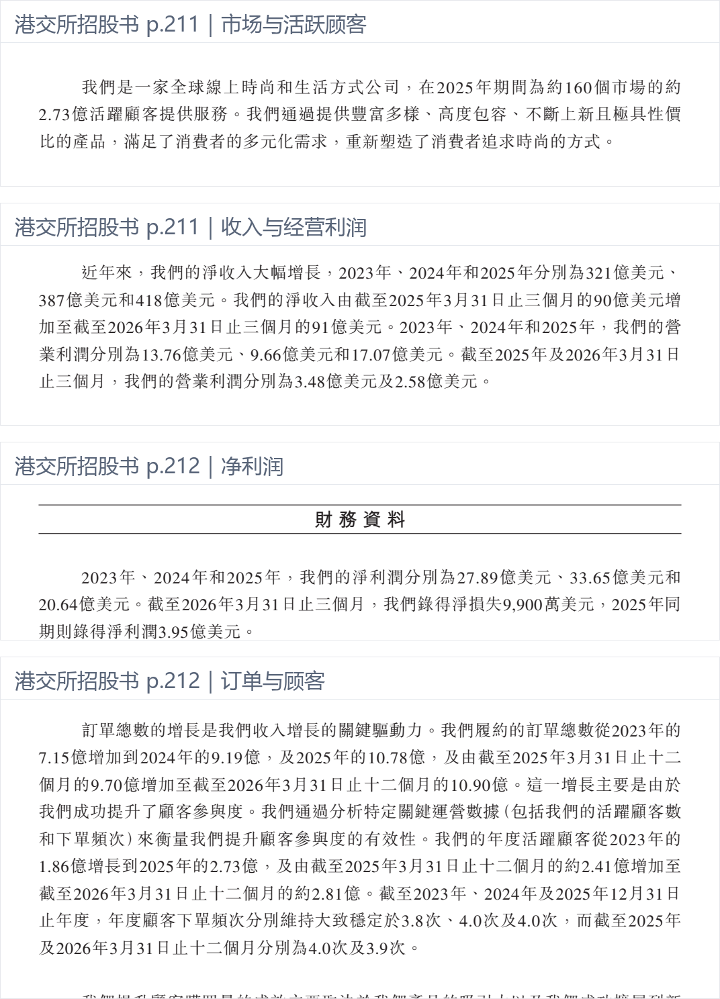
图 6 · 经营规模：2025年收入、净利润、活跃顾客、订单及覆盖市场 · 来源：SHEIN香港招股书“财务资料”第211–212页，港交所，2026年8月24日；灰框为编辑标注
从收入量级看，SHEIN已经接近全球头部服装集团。Inditex——Zara母公司——2025年收入为399亿欧元、净利润62亿欧元；优衣库母公司迅销2025财年收入为3.40万亿日元。由于币种、财年和业务结构不同，这组数据不能直接作为经营效率排名，但可以确认一件事：SHEIN已经不是一家需要用“独角兽”解释规模的创业公司。
差异更多体现在利润结构。SHEIN 2025年经营利润为17.07亿美元，经营利润率约4.1%。同期经营费用占净收入95.9%，其中销售成本占32.1%、履约费用占45.6%、营销费用占14.8%。换句话说，低库存并没有自动转化为高利润，节省下来的库存成本可能在履约、流量和全球合规环节重新出现。
因此，收入规模和估值之间并不存在简单对应关系。上市定价所反映的，是市场对未来现金流、增长持续性和风险折价的综合判断。SHEIN已经证明自己可以做大，公开市场仍在等待它证明这套规模能以怎样的利润率持续运转。
04 估值回落，不只是资本市场变冷
SHEIN过去十二年的估值轨迹大致如下：
- 2014年A轮融资前估值约5,300万美元；
- 2018年C轮融资前估值约24亿美元；
- 2020年C+轮估值约50亿美元；
- 2022年D轮融资前估值达到982亿美元；
- 2023年D+轮估值回落至640亿美元；
- 2026年港股IPO估值约265亿美元；
- 截至上市后的9月4日，市值约207亿美元。
2022年的估值形成于线上消费快速增长、全球利率较低、跨境低值包裹政策相对有利的阶段。到2026年，这些条件均已发生变化。不过，若只把估值下降归因于市场情绪，也会忽略SHEIN经营数据本身的变化。
最直接的是收入减速。SHEIN的净收入在2024年增长20.7%，2025年增长8%，2026年第一季度同比增长1.1%。美国市场受到低值包裹政策变化影响，但它不能解释全部减速：剔除美国收入后，其余市场的增速仍由24.9%降至12.2%，再降至2026年第一季度的6.7%。欧洲同期增速已经降至2.3%，而欧盟取消150欧元免税门槛当时尚未落地。
流量投入则继续增加。2025年营销费用为61.91亿美元，同比增长48.9%，同期净收入只增长8%；2026年第一季度，营销费用同比增长31.4%，净收入增长1.1%。营销费用没有按广告投放、促销补贴和商城招商分别披露，因此不能把这一变化直接写成获客成本上升。不过，至少可以确认：公司正在用明显更高的营销投入维持趋缓的收入增长。
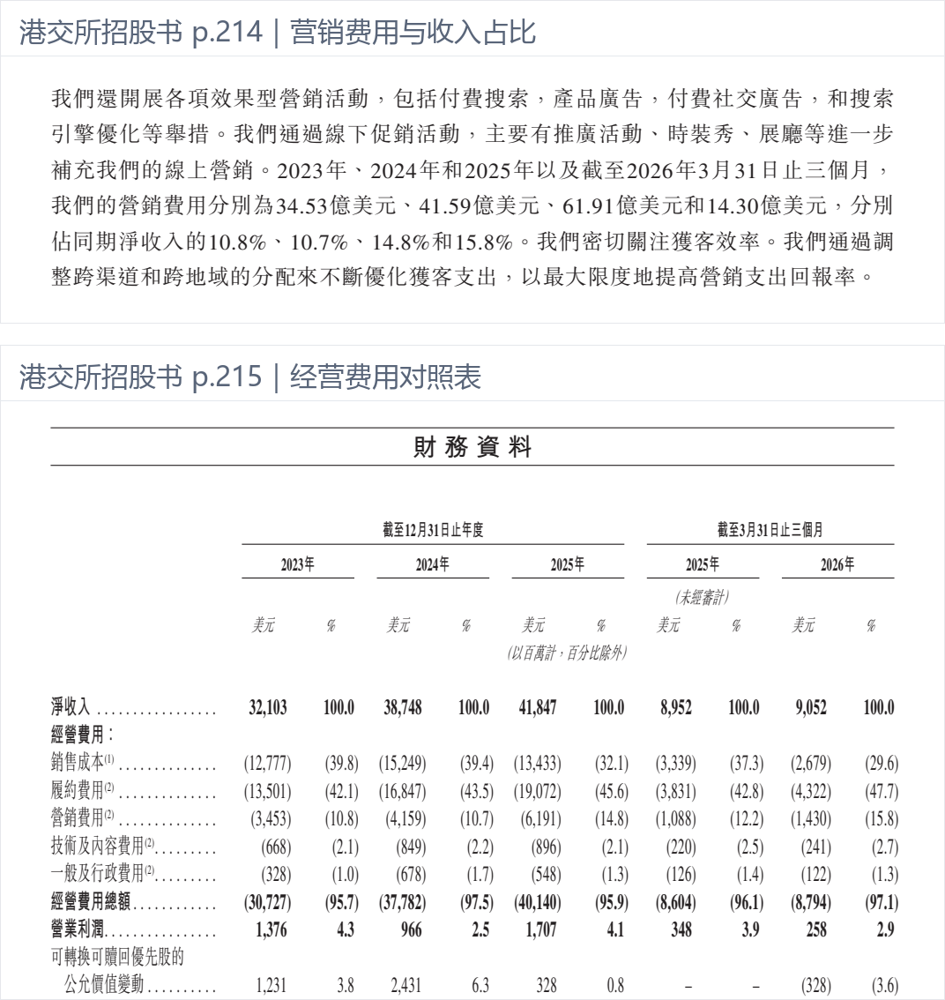
图 7 · 营销投入：2023–2025年及2026年第一季度营销费用与收入占比 · 来源：SHEIN香港招股书“财务资料”第214–215页，港交所，2026年8月24日；灰框为编辑标注
履约是另一项持续上升的成本。履约费用占净收入的比例从2023年的42.1%升至2025年的45.6%，2026年第一季度达到47.7%。同期每单履约费用由18.9美元降至17.7美元，说明单笔履约效率实际上有所改善；问题在于，每单净收入从44.9美元降至38.8美元，下降速度更快。履约费用率上升，不应简单理解为仓储物流效率恶化，更可能是客单价、品类结构、地区结构和关税共同作用的结果。
此外，供应链劳工、知识产权、产品安全、环保营销、消费者保护和平台算法治理等议题，都会进入资本市场的风险定价。
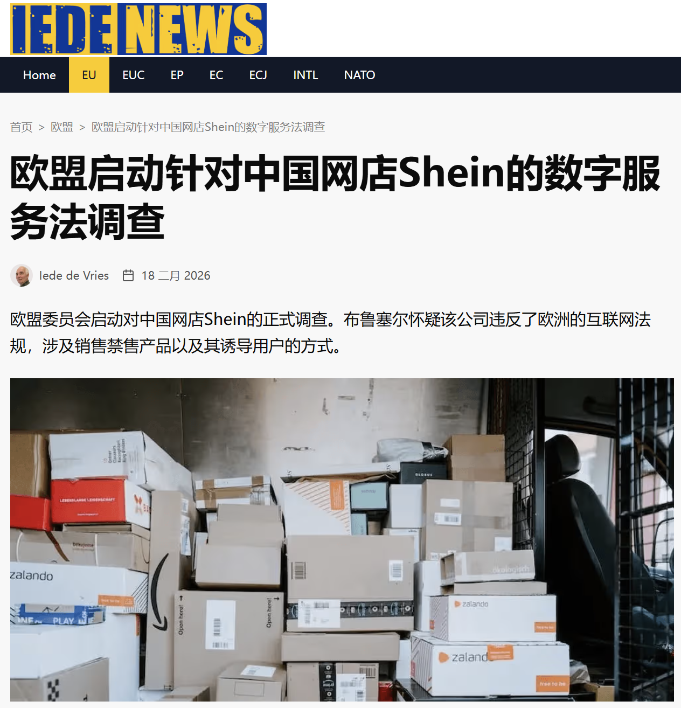
图 8 · 欧盟依据《数字服务法》对SHEIN启动正式调查的报道页面 · 来源：TEDE News，2026年2月18日
2026年2月，欧盟委员会依据《数字服务法》对SHEIN启动正式调查，范围包括成瘾式设计、推荐系统透明度和非法商品治理。
综合这些变化，市场给予SHEIN的估值折价并非单一因素造成。较合理的解释是：它仍是一家规模巨大、供应链效率突出的全球零售公司，但增长、利润和监管风险已经不足以支持2022年接近千亿美元的定价。
05 从纽约、伦敦到香港：上市地点也是公司身份问题
SHEIN的上市准备持续了数年，其间至少更换了三条路径。
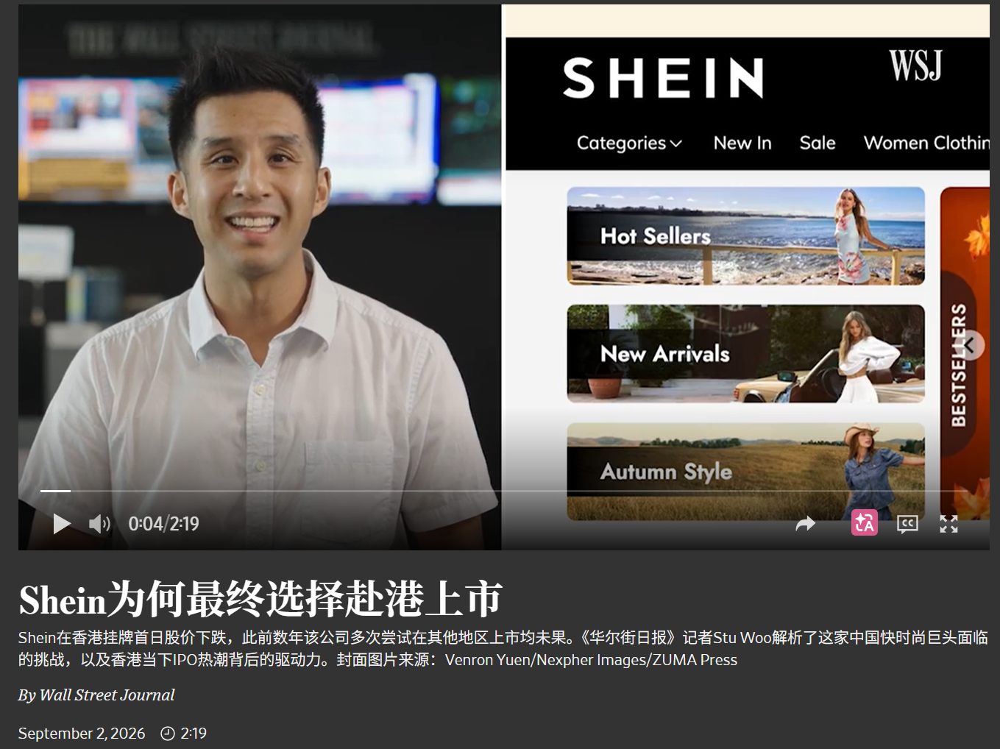
图 9 · 《华尔街日报》视频页面：SHEIN为何最终选择赴港上市 · 来源：The Wall Street Journal，2026年9月2日
公司在2020年前后已探索美国上市，2022年一度重启计划，随后因市场波动暂停。2023年11月，SHEIN秘密递交美国IPO申请，寻求的估值一度达到900亿美元。此后，美国国会议员要求监管机构在供应链强迫劳动等问题得到进一步核查前阻止其上市，申请没有取得实质进展。
2024年6月，SHEIN转向伦敦，向英国金融行为监管局秘密递交申请。英国市场需要大型IPO，英国金融行为监管局后来也批准了招股书草案；但作为具有中国业务联系的境外发行人，SHEIN还需要完成中国证监会的境外上市备案。伦敦方案最终没有获得继续推进所需的全部监管条件。
2025年5月，公司转向香港，7月秘密递交上市申请。2026年7月10日，中国证监会确认其拟发行不超过3.416亿股并在香港上市；8月启动招股，9月1日挂牌。
这个过程显示，SHEIN的公司身份不能只用注册地或总部所在地解释。它在新加坡设立总部、面向全球消费者经营，并使用跨国公司架构；与此同时，其核心供应链能力和相当部分经营活动仍与中国内地密切相关。纽约、伦敦和香港三条上市路径所面对的监管问题也不相同，最终上市地点是业务结构、政治环境和审批可行性共同作用的结果。
路透社披露的一个细节颇能说明这种张力：前执行董事长唐伟曾在2024年将公司的成功归因于“美国价值观”，这一表述引起中国有关方面不满。转向香港后，许仰天更频繁地参与境内监管和产业沟通，并承诺继续在广东投资15亿美元建设智能供应链。对SHEIN而言，这不是简单地在“中国公司”和“全球公司”之间二选一，而是需要同时解释全球经营属性与中国供应链基础。
公司身份在调整，创始团队的控制权则基本延续。2014年一次按面值发行后，许仰天与任晓庆、顾晓庆、苗苗的持股数量形成约3.82∶1∶1∶1的比例；十二年后，四人的A类股份比例仍接近3.89∶1∶1∶1。上市完成后，四位不同投票权受益人合计持有59.6%的股份，在非保留事项上拥有89.9%的投票权。A类股每股10票，B类股每股1票；保留事项则恢复为每股一票。
这意味着SHEIN已经成为公众公司，但没有成为控制权分散的公司。未来讨论其公司治理时，需要区分经济持股、一般事项投票权和保留事项投票权，不能只看一个比例。
06 为什么2026年是一个重要时间点
招股书披露的优先股安排，为上市时间提供了另一条观察线索。
SHEIN在2022年D轮融资中以982亿美元估值引入约18亿美元。相关优先股条款曾把“合格IPO”的市值门槛设在960亿美元。随着估值环境变化，这一条件已经难以满足。2026年3月，公司修改条款，取消960亿美元门槛，并把赎回期限延长至2026年12月31日。
公司同时同意向部分Pre-D、D和D+轮投资人支付现金回报及反稀释补偿。招股书披露的安排包括约11亿美元固定付款、预计2.304亿美元继续计息付款，以及最高约21.85亿美元反稀释现金补偿，合计最高约35亿美元。
SHEIN此次IPO净募资约132亿港元，折合约16.9亿美元。这个数字低于优先股相关现金安排的最高金额，但两者不能直接相减：付款对象、触发条件、支付时间和法律性质均不相同。更准确的理解是，前期融资条款已经对公司后续资本安排形成了实质约束。
这些条款不能证明SHEIN上市完全由赎回压力驱动。上市还承担融资、股东流动性、公开定价和公司治理转换等功能。不过，2026年12月31日这一期限表明，年内完成上市具有明确的财务意义。私人市场的高估值并非只是一段历史记录，它可能通过赎回权、反稀释和回报条款继续影响公司的现金安排。
07 这次上市改变了什么
对SHEIN而言，最直接的变化是定价机制。私人融资可以数年才形成一次估值，上市以后，增长、利润、关税和监管消息会被持续反映在股价中。公司需要定期披露的信息也会更多，平台业务能否改善利润、地区分散能否降低风险，都将有更清楚的数据可供检验。
对香港市场而言，SHEIN提供了一个具有代表性的样本：当一家具有中国供应链基础、但收入和组织高度国际化的公司难以在纽约或伦敦完成上市时，香港可以同时衔接境内备案和国际资本。这个案例说明香港仍具有制度接口价值，但不意味着所有跨境公司都能复制同一路径。SHEIN的规模、股权结构和监管协调成本都不具有普遍性。
对跨境电商行业而言，更值得关注的是政策基础的变化。
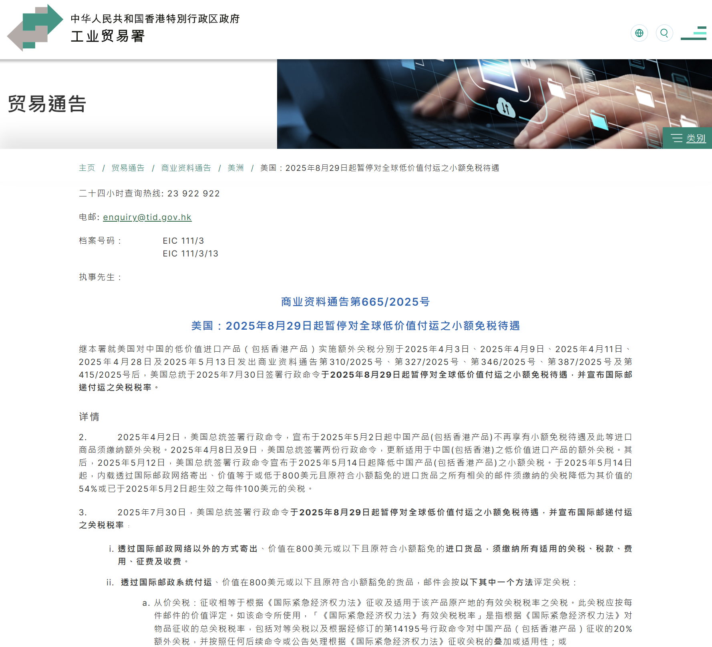
图 10 · 美国暂停全球低价值付运小额免税待遇的官方通知 · 来源：香港特别行政区政府工业贸易署，商业资料通告第665/2025号
美国自2025年5月起取消中国低值包裹的de minimis免税待遇；
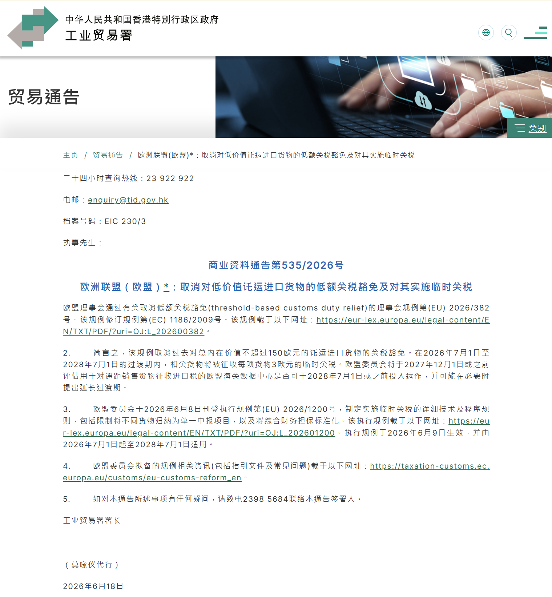
图 11 · 欧盟取消150欧元以下进口货物关税豁免并实施临时关税的官方通知 · 来源：香港特别行政区政府工业贸易署，商业资料通告第535/2026号
欧盟自2026年7月起取消150欧元以下包裹的关税豁免，并以临时措施对相关包裹按品类征收每项3欧元关税。以“中国直发、低价小包”为基础的成本结构正在被重新计算。
SHEIN的收入分布已经显示出调整方向。美国收入占比从2023年的29.4%降至2025年的24.1%，但其绝对收入并非同期持续下降：2023年至2025年仍由94.54亿美元增至101.01亿美元，只是在2024年达到104.64亿美元后有所回落。2025年，欧洲占净收入35.4%，其他地区占40.5%。占比下降和绝对额下降是两件事，不能混为一谈。
服务收入增长、商城扩张和多地区经营，说明SHEIN正在降低对单一商品模式和单一市场的依赖。未来，它需要处理的不只是服装上新速度，还包括本地备货、本地履约、多国供应链、第三方商家治理和品牌组合。SHEIN是否能够从高效率的跨境零售商转为稳定的平台型公司，目前仍是待验证的问题，而不是已经完成的转型。
08 结语
SHEIN过去的增长，可以概括为把线上需求识别、中国制造能力和小单返单机制连接在一起。这个解释仍然成立，但已经不足以覆盖上市后的全部问题。
从招股书看，SHEIN一方面拥有418亿美元收入、2.73亿活跃顾客和36天库存周转；另一方面，收入增速下降，营销与履约费用上升，贸易政策和平台监管趋严。服务业务提供了新的利润可能，公开披露的数据暂时还不足以判断它能在多大程度上改变集团结构。
因此，SHEIN上市更接近一个新的观察起点，而不是对既有模式的最终确认。后续最值得跟踪的不是股价某一天的涨跌，而是三组变化：服务收入能否转化为更好的利润率，本地化履约能否抵消低值包裹政策收紧，以及高度集中的控制权能否与公众公司治理长期兼容。
过去，外界主要通过创业故事理解SHEIN。上市以后，财报、监管文件和持续交易价格会逐步取代故事，成为判断这家公司的主要依据。
主要资料来源
SHEIN香港上市招股书，2026年8月24日
SHEIN最终发售价及配发结果公告，2026年8月31日
中国证监会：SHEIN境外发行上市备案通知书
路透社：SHEIN从纽约、伦敦到香港的IPO时间线
路透社：SHEIN如何重新强调中国供应链身份
WIRED：SHEIN早期创业史与SheInside时期
欧盟委员会：2026年7月起取消150欧元以下包裹免税
欧盟委员会：依据《数字服务法》对SHEIN启动正式调查
美国海关与边境保护局：中国低值包裹免税规则变化
Inditex 2025年报
迅销集团2025综合报告
数据截点：2026年9月4日。股价和市值属于动态数据；文中约1,620亿港元市值系以9月4日收盘价38.14港元乘以招股文件披露的发行后总股本粗略计算，不构成投资建议。